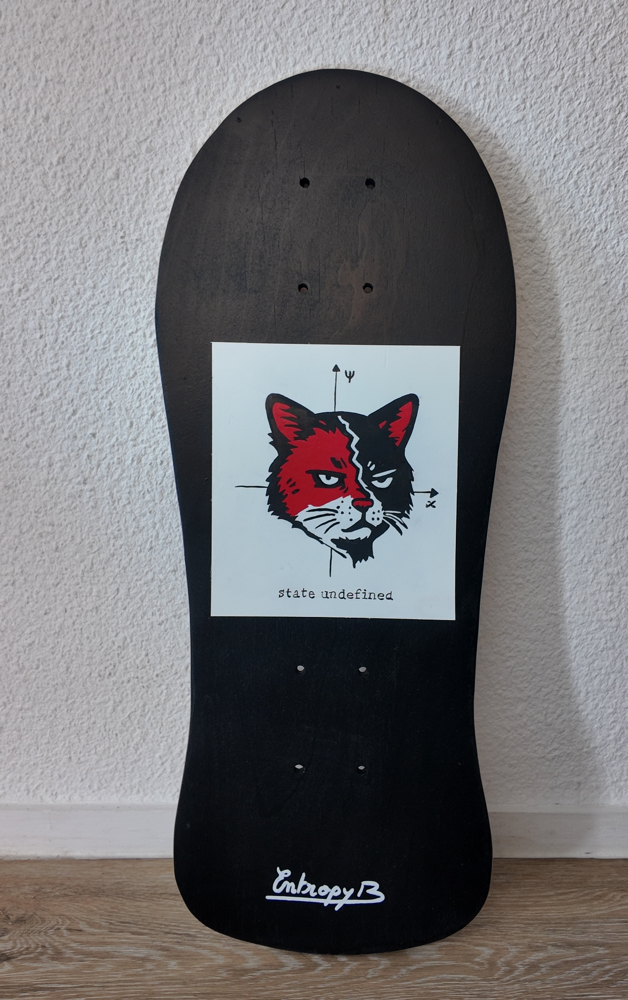
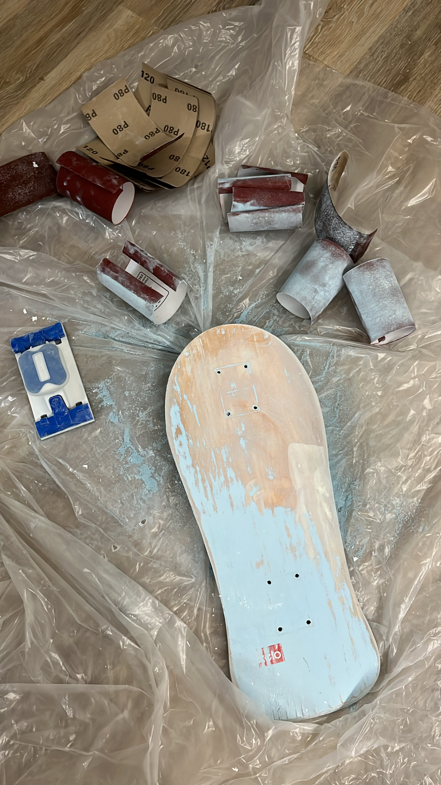
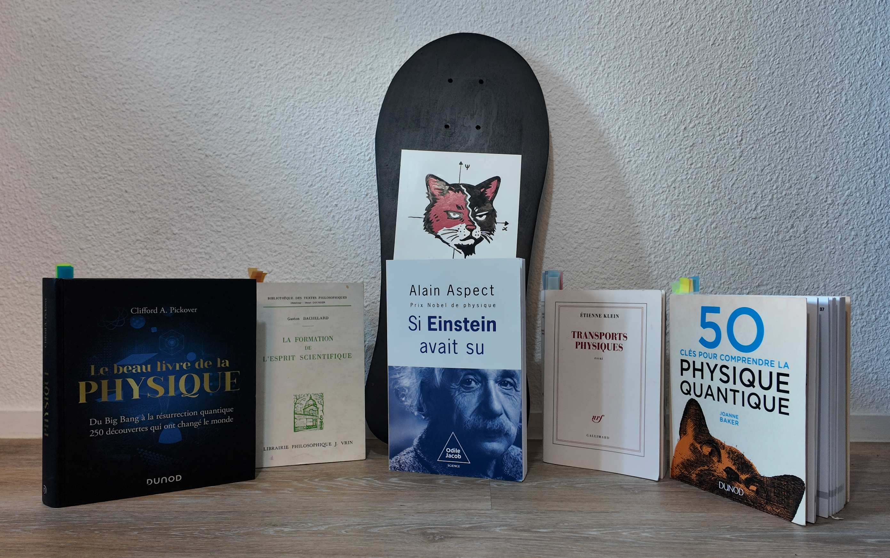
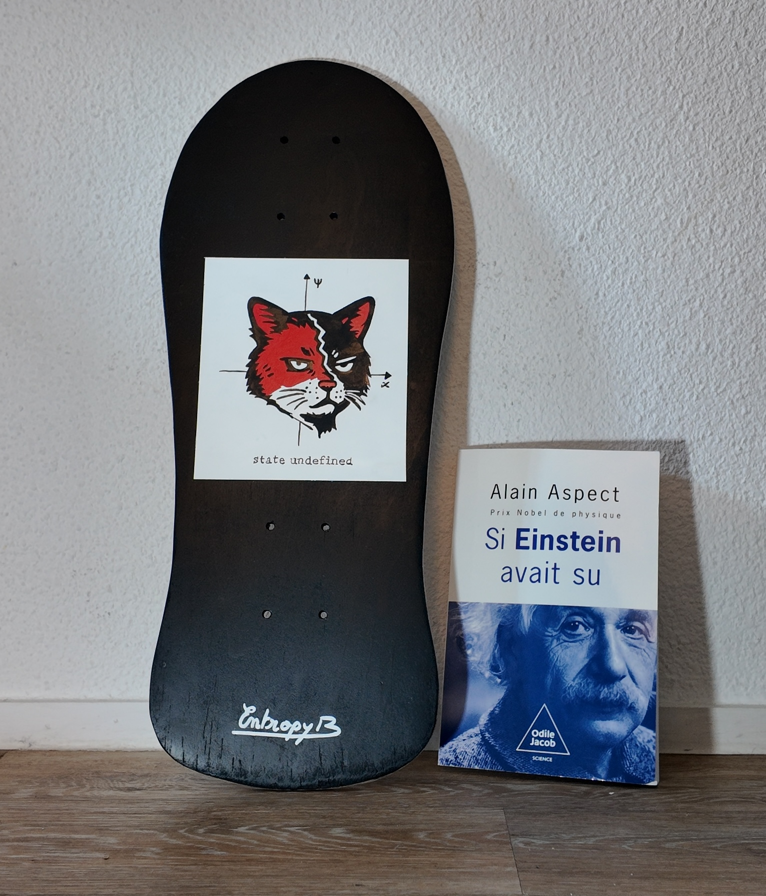

Schrödinger's cat
Une planche entre deux états : réelle seulement quand on la regarde.
Between life and death, until observed.
Source d’inspiration
Depuis la prépa, la mécanique quantique m’a toujours fasciné.
Pas seulement pour ses équations, mais pour sa manière de renverser notre intuition : En quantique, le trouble ne vient pas du réel, mais de notre besoin de certitudes.
D'où cette volonté de transmettre cet univers sur une planche de skate, comme à mon habitude.
Avant / Après

Il y a un concept que tout le monde a déjà croisé, même de loin : le chat de Schrödinger. Un chat à la fois mort et vivant, tant que l'on n’ouvre pas la boîte. Une expérience de pensée devenue presque un symbole culturel, parce qu’elle touche quelque chose de profondément humain : notre besoin de certitudes, et la gêne qu’on ressent face à l’incertitude.

Ce que j’aime dans cette idée, c’est qu’elle ressemble presque à de la philosophie (vous ne connaissez pas encore mon attraît pour la philosophie, mais il est bel et bien présent, peu être sur un futur custom...). On ne parle pas seulement de calculs, mais de réalité, d’observation, de vérité. En quantique, observer n’est pas neutre : le simple fait de mesurer peut influencer ce qu’on mesure.

J’ai voulu traduire visuellement cet “état statistique” qui flotte entre plusieurs possibles. D’où une ambiance plus sombre, presque “dark”, parce que le chat de Schrödinger n’est pas qu’un meme scientifique : c’est une métaphore brutale. Ce custom représente ce moment suspendu : la réalité comme un potentiel, pas encore figé. Une planche qui assume le flou, le doute, l’entre-deux.

Une photo plus symbolique qu'esthétique représentant ce custom entouré des livres scientifiques m'ayant marqués.

Petite touche quantique pour les plus courageux
Il y a aussi cette idée très forte en mécanique quantique : on ne peut pas tout connaître parfaitement en même temps.
Plus on cherche à “fixer” une information (par exemple la position), plus une autre devient floue (par exemple le mouvement).
Cette limite donne l’impression que le réel n’est jamais totalement accessible, seulement approché… selon l’endroit et le moment où l’on observe.
C’est exactement ce que j’avais envie de raconter : une réalité qui dépend du regard qu’on pose sur elle.
Petit clin d’œil scientifique
Associer cette planche au livre Si Einstein avait su d’Alain Aspect est un clin d’œil volontaire.
D’un côté, la mécanique quantique. De l’autre, Albert Einstein, figure fondatrice de la physique moderne, mais aussi l’un de ses plus grands sceptiques.
Einstein et ses collègues trouvaient la mécanique quantique profondément dérangeante, car elle semblait dire qu’une particule pouvait influencer instantanément une autre, même très éloignée.
Einstein appelait cela « une action fantomatique à distance ».
Le paradoxe EPR, formulé par Einstein, Podolsky et Rosen, est longtemps resté une simple expérience de pensée.
Une cinquantaine d’années plus tard, les expériences d’Alain Aspect viendront lui donner une réponse expérimentale — un tournant majeur, couronné par l’obtention du prix Nobel.